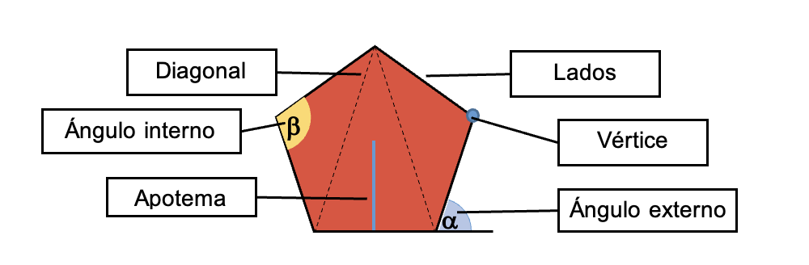

|
Un polígono es una figura geométrica formada por 5 lados, 5 ángulos y 5 vértices, que se
clasifica dentro de los polígonos y puede ser del tipo regular o irregular.
El pentágono adquiere los mismos elementos de un polígono:
- Lados:son los segmentos de recta que forman el pentágono.
- Vértices: es el punto donde concurren dos lados o segmentos de recta.
- Ángulos interiores: son ángulos que están dentro del pentágono y que se forma
de la intersección de dos lados consecutivos.
- Ángulos externos: son los ángulos fuera del pentágono. Son suplementarios a
los internos.
- Diagonales (D): son segmentos de recta que unen dos vértices no consecutivos.
- Apotema (a): es la menor distancia entre el centro y cualquiera de sus lados.

|